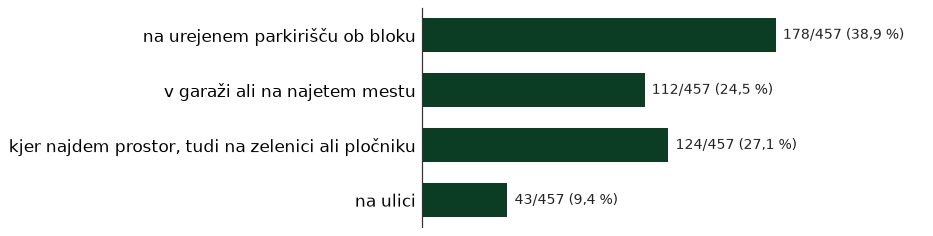
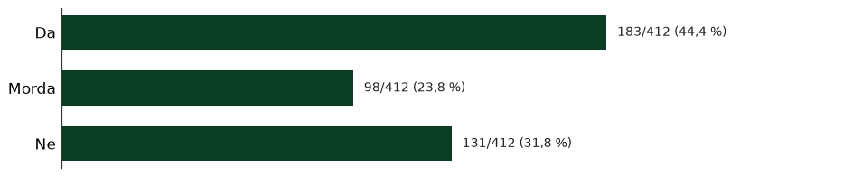
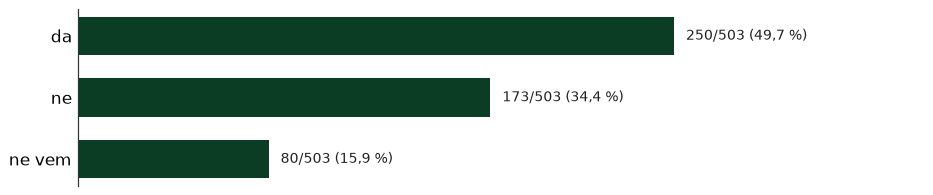
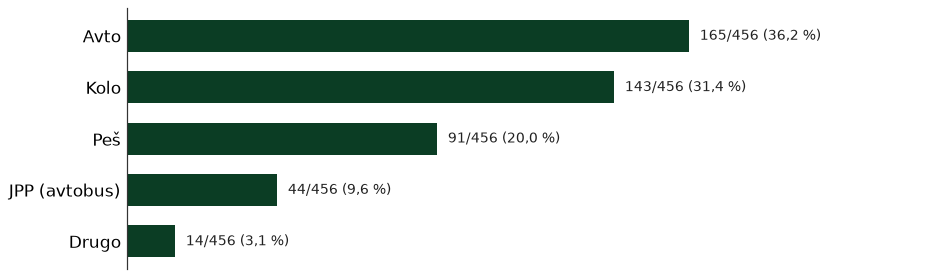
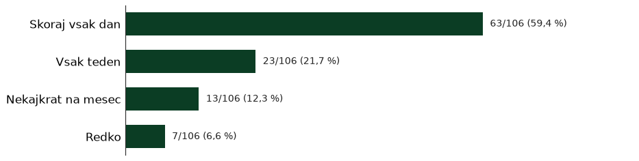
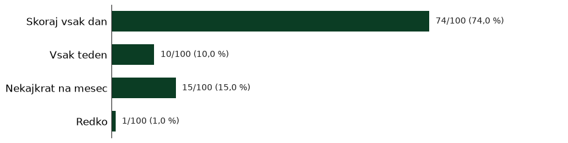
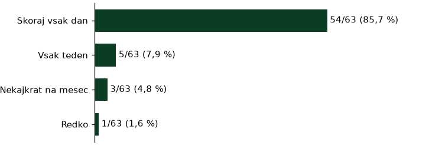
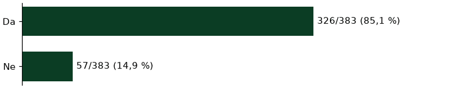
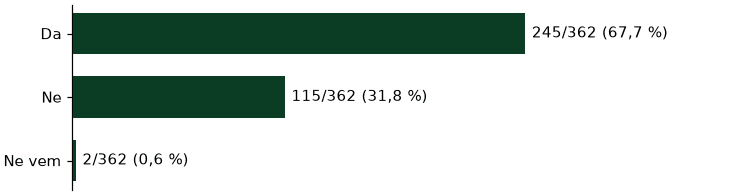

Savska anketa
Pregled za novinarje in predstavnike kandidatnih list
PRESEK 6. 11. 2026 ob 06.20 (Europe/Ljubljana) · anketa do 14. 11. · liste do 9. 11. ob polnočiPregled za novinarje in predstavnike kandidatnih list
PRESEK 6. 11. 2026 ob 06.20 (Europe/Ljubljana) · anketa do 14. 11. · liste do 9. 11. ob polnoči»Polna igrišča, prijetni sosedje, veliko zelenih površin.«
»Zelenje, bližina zelenih površin, dogajanje za mlade v barih, bližina zdravnika in trgovine in mir«
»Veliko zelenja, dreves. Igrišča, ki niso ob cesti. Omejitev omejitev hitrosti.«
Udeleženci najpogosteje pohvalijo bližino središča (87 %), zelenje in drevesa (84 %), trgovine in storitve (56 %) ter igrišča in športni park (54 %). Hkrati parkiranje in promet zasedata vrh nujnih težav.
»Polna igrišča, prijetni sosedje, veliko zelenih površin.«
»Zelenje, bližina zelenih površin, dogajanje za mlade v barih, bližina zdravnika in trgovine in mir«
»Veliko zelenja, dreves. Igrišča, ki niso ob cesti. Omejitev omejitev hitrosti.«
»Všeč mi je, da imam lahko kolo parkirano zunaj. Da je soseska mirna in varna za sprehod, cenim tudi, da je sprehod mogoč med drevesi.«
»Otroci se lahko igrajo zunaj in podijo po naselju. Občutek varnosti. Možnost peš ali s kolesom po opravkih in v center. Zelenje, drevesa. Igrišča.«
| Kje je največ težav v naselju | število | % od 382 |
|---|---|---|
| Parkiranje | 298 | 78 % |
| Promet skozi naselje | 228 | 60 % |
| Igle in droge, varnost | 143 | 37 % |
| Več klopi | 140 | 37 % |
| Čistoča in pasji iztrebki | 117 | 31 % |
| Drevesa in zelenice | 89 | 23 % |
| Dom skupnosti | 89 | 23 % |
| Boljši zrak | 80 | 21 % |
| Igrišča in mladi | 70 | 18 % |
| Koledar dogodkov | 71 | 19 % |
| Hrup | 64 | 17 % |
| Brez dvigala | 59 | 15 % |
| drugo | 13 | 3 % |
Med nujnimi 78 % (298/382). Skoraj vsak dan prizadene 71 % (209/293). Težave (n = 339): pogosto 52 %, včasih 28 %. Garažo bi želelo 45 % (145/320). Mediana najema 50 €/mesec (n = 124), nakupa 15.000 € (n = 95). Ponoči: urejeno 39 %, tudi zelenica/pločnik 28 %, garaža 24 %, ulica 10 % (n = 353).



»Naselje je dokaj umazano, veliko je narkomanov, parkirišč primanjkuje (bi se dalo kakšno zelenico, ki je nihče ne uporablja, nameniti parkirišču).«
»parkiranje, omejitev avtomobilov do največ dva avtomobila na stanovanje ureditev igrišč, ki so v bližini blokov več zabojnikov za pasje iztrebke in vrečke za pobiranje iztrebkov«
»Predvsem parkirna politika ni urejena, morali bi urediti enosmerni promet parkiranje ob cestah ne pa na zelenica! To da se drevesa podira ker se sušijo, narediš pa ji da se nebi in nadomesti se jih …«
»Asfaltiranje ulic, urejanje parkirišča in mesta za smetnjake, več dreves«
»Glavni problem je parkiranje, saj na račun avtomobilov izgubljamo prostor, ki je namenjen nam, prebivalcem. Prav tako mislim, da bi morali fizično omejiti tranzit čez naselje, npr. s slepimi ulicami …«
»Zmanjšali bi dostop dnevnim migrantom.. razbremenitev glavnih cest, z gradnjo cesti ob savskem in tako zmanjsali hrup za prebivalce zgradili garažne hiše. Se naprej negovali in sadili drvesa in …«
Druga tema (60 %). Skoraj vsak dan 74 % (168/227). Novo ureditev 62 % oceni slabo ali katastrofalno (214/345). Enosmerne: da 48 %, ne 36 %, ne vem 16 % (n = 385). Dnevni prevoz: avto 37 %, kolo 31 %, peš 19 %, JPP 10 % (n = 347).



»Več ležečih policajev v okolici šole in vrtca, saj omejitev 30 skozi naselje ne zaleže.«
»Velika večina ulic bi morala biti enosmernih, na križišču dveh ulic v naselju bi bilo fajn imeti ogledalo (iz ene od ulic v naselju zavijaš na slepo levo proti lokal ker so avti parkirani na pločniku)«
»Na Savski cesti bi dodal še en ležeči policaj na drugem prehodu (pri vhodu na parkirišče za bencinska črpalka). V enem letu bi me že vsaj 3x povozili, ker vsi divjajo. Videl sem tudi nesrečo, ko je …«
»Pločnike bi morali urediti, parkiranje je katastrofa. Nekatera igrišča bi potrebovala obnovo, sploh košarka in odbojka za mercatorjem na eni od ulic v naselju. Omejiti bi morali promet skozi savca.«
»Prenoviti bi morali igrišče ob eni od ulic v naselju in kolesarske poti ob Savski cesti, saj so že pravi skate park.«
Pogrešajo pošto (78 %) in banko (60 %) (n = 321).

»ni več pošte, banke, izginja ta mikrosistem, ki je delal savsko naselje poseben«
»Lahko bi obnovili košarkarska/nogometna asfaltirana igrišča, ker so že precej uničena. In to da so ukinili pošto in banko in pekarno in mesnico je bistveno poslabšalo kvaliteto življenja v naselju.«
»Slabo je, ker so vzeli pošto in bankomat ter banko. vsaj bankomat in pošta bi morala ostati, ogromno starih ljudi sploh ne zmore do pošte in gotovine. To je prometno območje s hrupom s cest, tega ni …«
»v naselju bo potrebna vzpostavitev psihološke svetovalnice za ljudi z duševnimi težavami«
»Pogrešam Pošto in banko ter čevljarja. Dostopnost do šolskega igrišča ni omogočena vsem stanovalcem. Na igrišču in na drugih igriščih ni pitnikov za vodo in klopc za počitek ali navijače. Komunala ne …«
»Da je dokaj čisto in urejeno. Da imamo igrišca za otroke, trgovine. Manjka samo to kar so nam že vzeli; pošto, banko«
Med nujnimi 37 % (143/382). Skoraj vsak dan 27 %, nekajkrat na mesec 35 % (n = 143).

»Čeprav, so moji otroci že zrasli, se mi zdi nesprejemljivo, da je šolsko igrišče zaprto v popoldanskem času. Če jih skrbi vandalizem, bi lahko organizirali zaklepanje po 20 uri. Pa prav šolah …«
»Izboljšal bi igrišče na eni od ulic v naselju predvsem igrišče za odbojko ki so ga vandali uničili (postaviti bi bilo treba močnejše štange kot so bile dolgo pred leti)«
»Malo me skrbi porast vandalizma, vdorov, vlomov oz. kraj v naselju. Parkirišča pred nekatereimi zgradbami so seveda tudi problem - vsi parkirajo vsepovsod. AMpak to predvidevam da je na ravni …«
Prav tako 37 % (140/382). Pri 65+ klop pogosto ali včasih pogreša skupaj 76 % (n = 33).

»Več klopc, več smetnjakov na igriščuh, javen wc«
»Se več zelenih površin oz klopi pri zelenih povrsinah, več avtobusnih povezav, pomanjkanje parkirnih mest«
»Več klopc in košev za smeti, manjkajo prehodi za pešce v okolici šole, slabo/neredno odstranjevanje listja/vej s pločnikov (predvsem po celi eni od ulic v naselju)«
»Premalo klopi v parkih in na igriščih. Tiste, ki so včasih bile umeščene v prostor (npr. igrišče na eni od ulic v naselju), so uničene in niso nadomeščene oz. obnovljene. Igrišče na eni od ulic v …«
»Bolj urejene parke, ki niso umazani in zanemarjeni. Še boljše opremljen fitnes na prostem. Več klopci z mizo.«
Med nujnimi 31 %. Čistilne akcije podpira ≥1×/leto 88 % (n = 386).

»Drugo: Ne podpiram, če bi vsak poskrbel za red in čistočo (tudi z več koši za smeti - MOL) ne bi bilo treba čistit drugim.«
»Drugo: Mislim, da bi moral za čistočo vsak skrbeti sam. Predvsem vzgoja se začne doma. Nekaj pa tudi občina, da večkrat očisti naselje«
»Podgane problem, busi preredki«
»Odlaganje odpadkov na eni od ulic v naselju - imamo skupne zabojnike z Merkatorjem, v njih pa je vse kaj drugo kar bi moralo biti. Želim si da bi bili zabojniki pod ključem in da bi ena oseba skrbela …«
»Všeč mi je, da je veliko zelenja....lahko bi ga bilo še več. Razmeroma čista okolica, čeprav veliko ljudi/pasjih lastnikov ne pobira kakcev za svojimi ljubljenčki.«
Drevesa/zelenice 23 %, boljši zrak 21 %, hrup 17 %. Skoraj vsak dan: zelenje 59 %, zrak 76 %, hrup 86 %.



»Izboljšali bi pločnike (kaksna cesta ga sploh nima) in ceste, tudi prometno ureditev, odprli šolsko igrišče za vse, postavili kak pitnik na igrišče, zasadili sadno drevje«
»Slabo vzdrzevane ceste, veliko blokov se ni pristopilo k obnovi fasad, nadomeščanje dreves po tem, ko kakšnega posežejo«
»Bolj varno, manj asfalta več zelenice, posta in banka«
»Preveč se sliši ropotanje vlakovnih kompozicij. Naj dajo protihrupno ograjo, da se zmanjša hrup.«
»Med poletjem bi lahko bil kakšen pitnik z vodo na filipovem igrišču«
Med nujnimi 23 %. Želje: druženje/kava 36 %, vadba starejši 29 %, delavnica 27 %, zbori 23 %, prostor za najstnike 20 % (n = 305).

»Okolica ni ravno urejena. Tudi marsikatera igrišča bi potrebovala prenovo. Storitve izginjajo. Prostorov za druženje je malo ali jih, razen lokalov, sploh ni. Parkiranje je zvečer oteženo, parkiranje …«
»Premalo parkirnih mest; kakšen prostor za mlade bi bil potreben«
»zaktivirali bi, banka in pošta, to je katastrofa kar so nam vse vzeli, bankomata tudi ni več, je pri mercatorju, stopnice za na savski hrib, nastanitvena, dom skupnosti za starejše, kot šent za …«
»Žal nismo dovolj proaktivni, da bi delovali kot skupnost. Manjka dogodkov, ki bi nas sosede povezovali. Manjka tudi posluha odločevalcev, da bi skupaj urejali sosesko.«
»V centru Savskega naselja je arhitekturno dobro postavljen manjši kompleks namenjen trgovinicam, lokalu in trenutno Merkatorju. Ampak je premalo izkoriščen saj bi morala tam biti oprte storitve, ki …«
Igrišča/mladi 18 %. Pot v šolo/vrtec: kar varna 40 %, ne preveč varna 38 %, nevarna 15 %, zelo varna 7 % (n = 114).


»Igrišče urediti zraven ene od ulic v naselju k je igrišče za kosarko in nogomet dotrajani in da se ustavi ljudi k parkerajo po zelenicah in na otroskih igralih«
»Ne moreš hodit po pločniku na eni od ulic v naselju zaradi parkiranih vozil. Parkirana vozila na zelenicah. Zaprto šolsko igrišče v popoldanskih urah. Če šola oddaja telovadnico za druge dejavnosti …«
»Drugo: mladi ki sedijo v parkih naj počistijo za seboj in v garažah isto.«
»Majhne storitve: ključavničar, čevljar, slaščičarna. Predvsem pogrešam več parkirišč za kolesa, ob blokih, ob igriščih.«
»Pločniki, zasedeni z avtomobili«
»Ena od ulic v naselju nima pločnika, v kolikor se uredi pločnik pa ne bo parkingov.«
Ocene 4–5: 48 % (186/386; v imenovalcu je tudi »Ne uporabljam«). Manjka: nič 41 %, osebni zdravnik 37 %, zobozdravnik 26 % (n = 348). Upravnik: odzivnost »malo/sploh ne« 48 % (152 od 315). Zbori: redno 48 % (n = 364).





»v naselju bo potrebna vzpostavitev psihološke svetovalnice za ljudi z duševnimi težavami«
»Žal nismo dovolj proaktivni, da bi delovali kot skupnost. Manjka dogodkov, ki bi nas sosede povezovali.«
| Starost | % (n = 387) |
|---|---|
| 35–49 | 44 % |
| 50–64 | 26 % |
| 25–34 | 14 % |
| 65–74 | 7 % |
| 15–24 | 6 % |
| 75 ali več | 3 % |
Lastnik 81 % (n = 382), najemnik pri zasebniku 11 %. Dvigalo da 68 % (245/362), ne 32 % (115/362); »ne vem« 2/362 je v imenovalcu. Porazdelitev po ulicah in vhodih ni izpisana.

Kontakt za anketo: savskonaselje1@gmail.com · 070 205 595